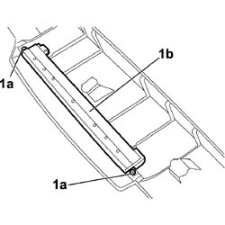

5550D16 THIRD BRAKE LIGHT - R+R
- Path
- Procedures > 55 ELECTRICAL EQUIPMENT > 5550 WARNING AND MANOEUVRING INDICATORS > 5550D BRAKE AND REVERSING LIGHTS > 5550D16 THIRD BRAKE LIGHT - R+R
- Kind
- repair procedure (removal / refitting; the operation number is the code)
- Applies to
- all engines; all production periods
- Interactive page
- https://sloeber94.github.io/elrnDB-fCrm/en/#/194000771
Applies to: all engines; all production periods
 Removing
Removing
 Refitting
Refitting- Open the tailgate.
- Turn the ignition key to the OFF position.
- Disconnect the negative battery terminal.
Description | Connector | |
|---|---|---|
BATTERY |
Op. 7015A58 INTERNAL TAILGATE MOULDING (ONE) - R+R
1. Position the moulding on a workbench, undo the bolts (1a) and remove the third brake light (1b).

Applies to: all engines; all production periods
Refitting
Removing- Position the third brake light on the moulding and tighten the bolts.
Op. 7015A58 INTERNAL TAILGATE MOULDING (ONE) - R+R
- Connect the negative battery terminal.
Description | Connector | |
|---|---|---|
BATTERY |